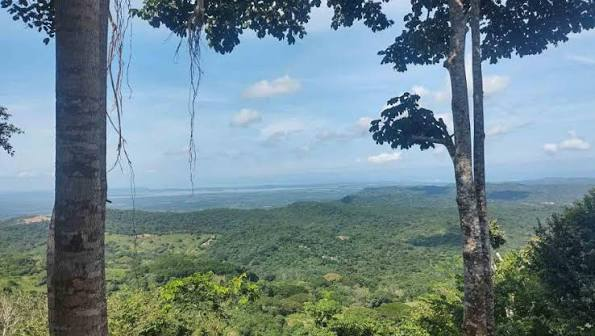

El cielo sobre Piojó
Ovnis / Misterios del cielo y observación astronómica

Un horizonte entre montañas
En el occidente del departamento del Atlántico se encuentra Piojó, un municipio rodeado de colinas, vegetación y paisajes naturales que contrastan con las zonas urbanas de la región. Su geografía ofrece escenarios especiales para contemplar el horizonte y observar los cambios del cielo durante el día y la noche.
Uno de sus lugares más representativos es el Cerro La Vieja, reconocido por sus paisajes y por ser uno de los puntos de mayor altura del departamento. Desde sus alrededores, la inmensidad del territorio invita a detenerse y mirar hacia el firmamento.
Cuando llega la noche, el paisaje adquiere otra apariencia. Las montañas se convierten en siluetas oscuras y el cielo comienza a revelar sus estrellas. En ese escenario, cualquier destello o luz distante puede despertar preguntas sobre lo que se mueve sobre nuestras cabezas.
El Cerro La Vieja y las estrellas
El Cerro La Vieja no solo representa un atractivo natural para Piojó. También se ha convertido en un escenario para experiencias relacionadas con la contemplación del paisaje y la observación del cielo.
Entre las propuestas turísticas de la zona se encuentra una ruta de astrofotografía que invita a observar el firmamento desde este entorno natural. La experiencia combina la fotografía nocturna, el paisaje y la conexión con el territorio.
Observar las estrellas permite reconocer que muchos de los puntos luminosos que aparecen en el cielo tienen explicaciones astronómicas. Sin embargo, la distancia, el movimiento y las condiciones de observación pueden hacer que algunos objetos parezcan extraños o difíciles de identificar.
Luces que despiertan preguntas
En diferentes regiones de Colombia se han compartido imágenes de luces que atraviesan el cielo nocturno. Algunas de ellas han sido relacionadas con posibles ovnis debido a su apariencia y a la forma en que se desplazan.
Un ejemplo ocurrió en febrero de 2024, cuando habitantes de varios lugares del país registraron una fila de luces brillantes. Las imágenes generaron numerosas especulaciones en redes sociales, pero las verificaciones periodísticas relacionaron el fenómeno con satélites Starlink lanzados desde Florida.
Este tipo de acontecimientos demuestra que no todas las luces desconocidas corresponden a fenómenos inexplicables. Los satélites, las aeronaves y otros objetos pueden producir apariencias sorprendentes cuando se observan desde tierra.
Aunque no hay evidencia pública suficiente para confirmar un avistamiento extraterrestre específico en Piojó, su entorno natural ofrece un escenario interesante para explorar el cielo y sus misterios.
¿Qué podemos encontrar en el cielo?
- Estrellas: puntos luminosos que forman parte de nuestra galaxia y que pueden agruparse en constelaciones.
- Planetas: algunos pueden observarse a simple vista como puntos brillantes en el firmamento.
- Satélites artificiales: objetos que orbitan la Tierra y pueden reflejar la luz solar durante la noche.
- Meteoros: destellos producidos cuando fragmentos de material espacial ingresan en la atmósfera.
- Aeronaves: luces intermitentes de aviones que recorren diferentes rutas aéreas.
Un misterio que continúa sobre nosotros
Piojó reúne características naturales que permiten descubrir otra cara del Atlántico. Sus montañas, reservas ecológicas y paisajes abiertos ofrecen una oportunidad para acercarse a la naturaleza y contemplar el cielo desde una perspectiva diferente.
Tal vez el próximo destello que aparezca sobre el Cerro La Vieja sea un satélite, una estrella fugaz o una aeronave. Pero mientras existan preguntas y personas dispuestas a mirar hacia arriba, el cielo seguirá siendo uno de los escenarios más fascinantes para la imaginación humana.
Fuentes de consulta
- Gobernación del Atlántico – Piojó y sus atractivos naturales.
- Ruta de astrofotografía Cerro La Vieja – Cielo, ritual y estrellas.
- VisitAtlántico – Reserva Ecológica El Palomar.
- Noticias Caracol – Extrañas luces observadas en Colombia en febrero de 2024.
- Starlink – Información sobre la red de satélites.